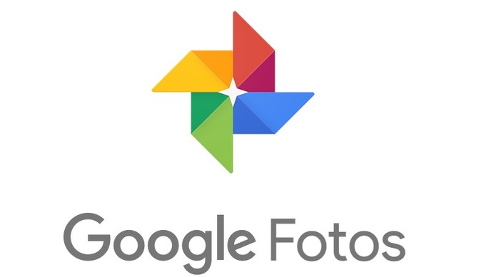
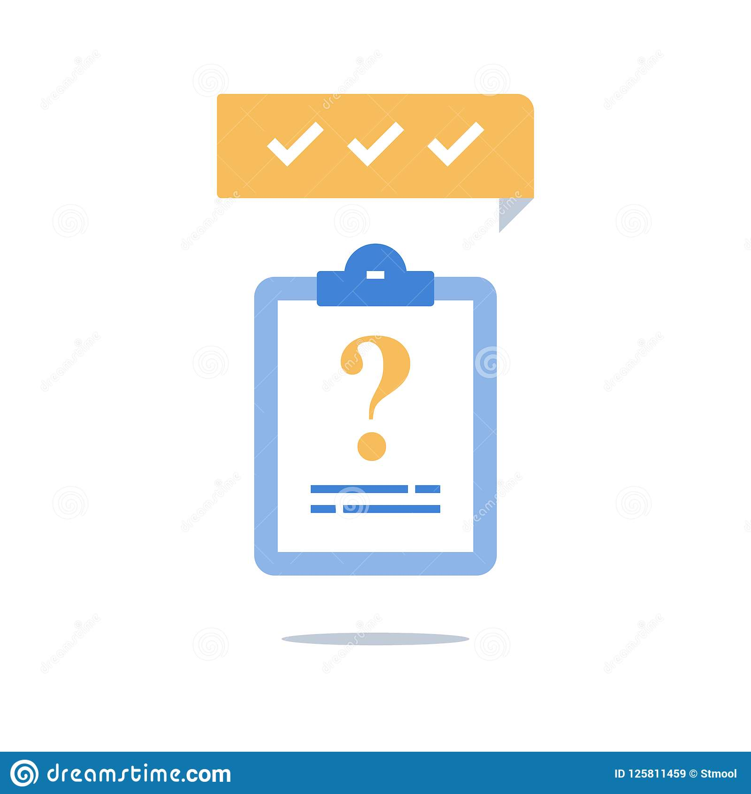

Mecanismos de inteligência artificial são excelentes para detectar, identificar e classificar objetos e pessoas em vídeos e imagens. Para esse fim, é utilizada uma detecção de padrões conceitualmente simples, mas intensiva em termos de poder de processamento.Se a informação da imagem já está decifrada e legível por máquinas em primeiro lugar, fotos e vídeos podem ser facilmente divididos em categorias, pesquisadas e encontrados. Esse reconhecimento também é possível para dados em áudio.
Exemplos
Google Photos: É capaz de analisar, categorizar e encontrar imagens usando termos de busca como "fotos de gato", mesmo que você nunca tenha marcado um gato em suas fotos.

Serviços de atendimento ao cliente: Estão cada vez mais utilizando chatbots. Estes assistentes focados em texto fazem o reconhecimento de palavras-chave usadas pelo cliente, a fim de responder adequadamente. Dependendo do uso, o assistente pode ser mais ou menos complexo.
A análise de opinião: É usada não apenas para prever eleições políticas, mas também em marketing e diversas outras áreas. Também conhecida como análise de sentimentos, ela é muito usada por empresas para medir a interação de seus consumidores com seus canais de atendimento e redes sociais, por exemplo. Será que estão felizes? Ou furiosos? Por quê?

Algoritmos de Pesquisa: Como os do Google, são naturalmente os mais secretos. A forma como os resultados de cada busca são calculados, medidos e produzidos são amplamente determinados por mecanismos que funcionam baseados em aprendizado de máquina.